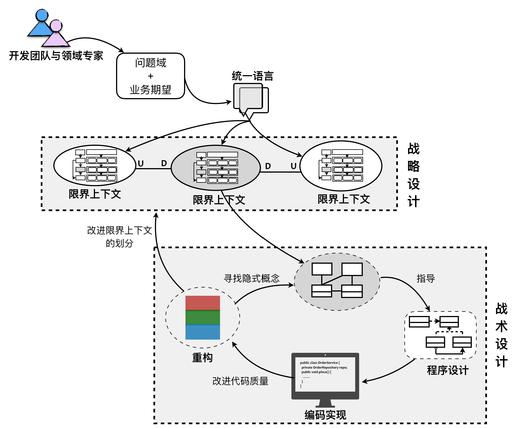
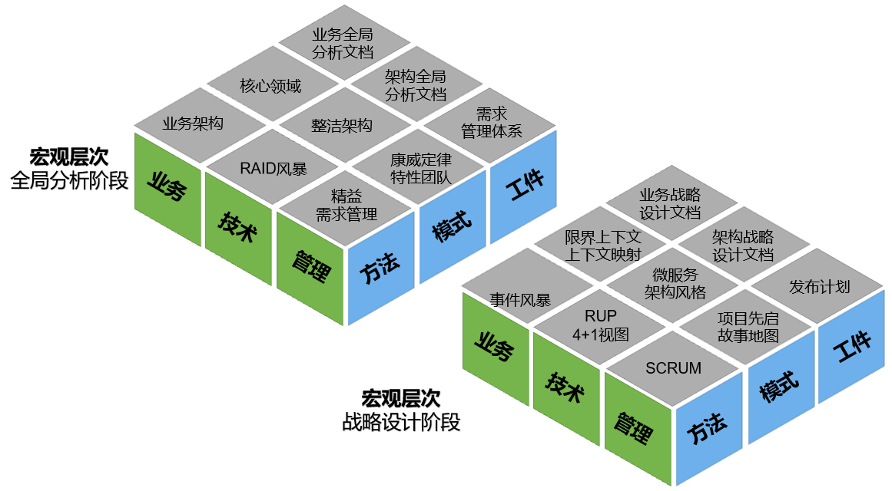
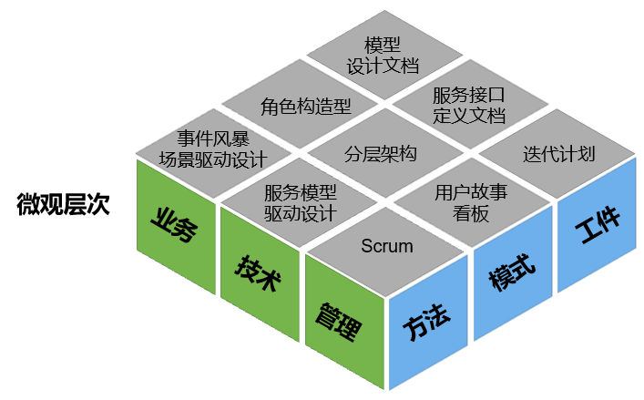

- 001 「战略篇」访谈 DDD 和微服务是什么关系？.md.html
- 002 「战略篇」开篇词：领域驱动设计，重焕青春的设计经典.md.html
- 003 领域驱动设计概览.md.html
- 004 深入分析软件的复杂度.md.html
- 005 控制软件复杂度的原则.md.html
- 006 领域驱动设计对软件复杂度的应对（上）.md.html
- 007 领域驱动设计对软件复杂度的应对（下）.md.html
- 008 软件开发团队的沟通与协作.md.html
- 009 运用领域场景分析提炼领域知识（上）.md.html
- 010 运用领域场景分析提炼领域知识（下）.md.html
- 011 建立统一语言.md.html
- 012 理解限界上下文.md.html
- 013 限界上下文的控制力（上）.md.html
- 014 限界上下文的控制力（下）.md.html
- 015 识别限界上下文（上）.md.html
- 016 识别限界上下文（下）.md.html
- 017 理解上下文映射.md.html
- 018 上下文映射的团队协作模式.md.html
- 019 上下文映射的通信集成模式.md.html
- 020 辨别限界上下文的协作关系（上）.md.html
- 021 辨别限界上下文的协作关系（下）.md.html
- 022 认识分层架构.md.html
- 023 分层架构的演化.md.html
- 024 领域驱动架构的演进.md.html
- 025 案例 层次的职责与协作关系（图文篇）.md.html
- 026 限界上下文与架构.md.html
- 027 限界上下文对架构的影响.md.html
- 028 领域驱动设计的代码模型.md.html
- 029 代码模型的架构决策.md.html
- 030 实践 先启阶段的需求分析.md.html
- 031 实践 先启阶段的领域场景分析（上）.md.html
- 032 实践 先启阶段的领域场景分析（下）.md.html
- 033 实践 识别限界上下文.md.html
- 034 实践 确定限界上下文的协作关系.md.html
- 035 实践 EAS 的整体架构.md.html
- 036 「战术篇」访谈：DDD 能帮开发团队提高设计水平吗？.md.html
- 037 「战术篇」开篇词：领域驱动设计的不确定性.md.html
- 038 什么是模型.md.html
- 039 数据分析模型.md.html
- 040 数据设计模型.md.html
- 041 数据模型与对象模型.md.html
- 042 数据实现模型.md.html
- 043 案例 培训管理系统.md.html
- 044 服务资源模型.md.html
- 045 服务行为模型.md.html
- 046 服务设计模型.md.html
- 047 领域模型驱动设计.md.html
- 048 领域实现模型.md.html
- 049 理解领域模型.md.html
- 050 领域模型与结构范式.md.html
- 051 领域模型与对象范式（上）.md.html
- 052 领域模型与对象范式（中）.md.html
- 053 领域模型与对象范式（下）.md.html
- 054 领域模型与函数范式.md.html
- 055 领域驱动分层架构与对象模型.md.html
- 056 统一语言与领域分析模型.md.html
- 057 精炼领域分析模型.md.html
- 058 彩色 UML 与彩色建模.md.html
- 059 四色建模法.md.html
- 060 案例 订单核心流程的四色建模.md.html
- 061 事件风暴与业务全景探索.md.html
- 062 事件风暴与领域分析建模.md.html
- 063 案例 订单核心流程的事件风暴.md.html
- 064 表达领域设计模型.md.html
- 065 实体.md.html
- 066 值对象.md.html
- 067 对象图与聚合.md.html
- 068 聚合设计原则.md.html
- 069 聚合之间的关系.md.html
- 070 聚合的设计过程.md.html
- 071 案例 培训领域模型的聚合设计.md.html
- 072 领域模型对象的生命周期-工厂.md.html
- 073 领域模型对象的生命周期-资源库.md.html
- 074 领域服务.md.html
- 075 案例 领域设计模型的价值.md.html
- 076 应用服务.md.html
- 077 场景的设计驱动力.md.html
- 078 案例 薪资管理系统的场景驱动设计.md.html
- 079 场景驱动设计与 DCI 模式.md.html
- 080 领域事件.md.html
- 081 发布者—订阅者模式.md.html
- 082 事件溯源模式.md.html
- 083 测试优先的领域实现建模.md.html
- 084 深入理解简单设计.md.html
- 085 案例 薪资管理系统的测试驱动开发（上）.md.html
- 086 案例 薪资管理系统的测试驱动开发（下）.md.html
- 087 对象关系映射（上）.md.html
- 088 对象关系映射（下）.md.html
- 089 领域模型与数据模型.md.html
- 090 领域驱动设计对持久化的影响.md.html
- 091 领域驱动设计体系.md.html
- 092 子领域与限界上下文.md.html
- 093 限界上下文的边界与协作.md.html
- 094 限界上下文之间的分布式通信.md.html
- 095 命令查询职责分离.md.html
- 096 分布式柔性事务.md.html
- 097 设计概念的统一语言.md.html
- 098 模型对象.md.html
- 099 领域驱动设计参考过程模型.md.html
- 100 领域驱动设计的精髓.md.html
- 101 实践 员工上下文的领域建模.md.html
- 102 实践 考勤上下文的领域建模.md.html
- 103 实践 项目上下文的领域建模.md.html
- 104 实践 培训上下文的业务需求.md.html
- 105 实践 培训上下文的领域分析建模.md.html
- 106 实践 培训上下文的领域设计建模.md.html
- 107 实践 培训上下文的领域实现建模.md.html
- 108 实践 EAS 系统的代码模型.md.html
- 109 后记：如何学习领域驱动设计.md.html
- 捐赠
091 领域驱动设计体系
至此，我已经将领域驱动战略设计和战术设计的内容全部讲解完毕。从统一语言到限界上下文，从限界上下文到上下文映射，从领域分析建模到领域设计建模，再从领域设计建模到领域实现建模，我将软件架构设计、面向对象设计、场景驱动设计和测试驱动开发有机地融合起来，贯穿于领域驱动设计的全过程。这个过程牵涉到了大量的分析建模、软件设计和编程实现知识，许多原则、模式和实践本身就是互为参考的，这就不可避免导致内容存在一定的发散性，无法清晰地展现领域驱动设计的全貌。此外，战略设计与战术设计并非完全割裂的两个阶段，战略设计的结果指导着战术设计，战术设计的决策又反过来影响战略设计，二者互为补充，只有如此才能形成一个螺旋迭代的领域驱动设计过程。
在进行战略设计与战术设计的融合讲解时，让我们先回顾在《领域驱动战略设计实践》中给出的领域驱动设计全过程：

整个过程总结为如下一段话：
面对客户的业务需求，由领域专家与开发团队展开充分的交流，经过需求分析与知识提炼，获得清晰的问题域。通过对问题域进行分析和建模，识别限界上下文，利用它划分相对独立的领域，再通过上下文映射建立它们之间的关系，辅以分层架构与六边形架构划分系统的逻辑边界与物理边界，界定领域与技术之间的界限。之后，进入战术设计阶段，深入到限界上下文内对领域进行建模，并以领域模型指导程序设计与编码实现。若在实现过程中，发现领域模型存在重复、错位或缺失时，再进而对已有模型进行重构，甚至重新划分限界上下文。
现在，我们需要将这一完整过程与诸多实践、方法与原则结合起来，以期给出提供落地实践指导的参考过程模型。
实施领域驱动设计的前置条件
软件的世界是没有银弹的，领域驱动设计自然不能解决软件开发的所有问题。不仅如此，我们还必须重视领域驱动设计的适用范围，避免将它扩大化，以至于不恰当地运用了领域驱动设计，反而未获得理想的结果。Eric Evans 在《领域驱动设计》一书中就给出了如下几个适用范围：
- 领域驱动设计只有应用在大型项目上才能产生最大的收益，而这也确实需要高超的技巧。不是所有的项目都是大型项目；也不是所有的项目团队都能掌握这些技巧
- 如果一个架构能够把那些与领域相关的代码隔离出来，得到一个内聚的领域设计，同时又使领域与系统其它部分保持松散耦合，那么这种架构也许可以支持领域驱动设计
- 将领域实现独立出来是领域驱动设计的前提
Eric Evans 是从项目复杂度、团队能力以及架构设计方法等要素提出的适用范围。其中，只有项目复杂度是一个本质问题，我们无法改变，但这并非意味着领域驱动设计不能运用到简单项目上，而是因为领域驱动设计这套方法确实具有一定难度，对团队成员的能力提出了更高要求，设计与开发成本也会提高。领域驱动设计应对的是软件核心的复杂度（tackling complexity in the heart of software），它提出的诸多模式都是为业务复杂度准备的武器，用在简单系统，不免有大炮打蚊子的感觉。Eric Evans 强调了架构设计对领域驱动设计带来的影响，将领域实现独立出来，形成内聚的领域设计，才能有效地隔离业务复杂度与技术复杂度，降低系统的整体复杂度。
如果要将领域驱动设计成功运用到复杂业务系统，根据我个人的实践经验，我认为必须同时满足如下三个条件：
- 开发团队与领域专家一起工作
- 统一语言必须贯穿整个过程
- 引入限界上下文分而治之
领域驱动设计不仅仅是一套设计方法体系，它将系统的领域建模抬到了极高的地位，是整个方法的核心驱动力。如何才能有效建模？答案就是让开发团队与领域专家工作在一起。倘若能建立全功能的特性团队，让需求分析人员与开发人员乃至测试人员密切合作，针对领域逻辑进行沟通与交流，就能提炼出指导领域模型驱动设计的统一语言。领域专家需要参与整个领域建模过程，为团队提供业务指导。开发团队获得的领域模型，尤其是领域分析模型，应以能与领域专家沟通并获得理解为标准。
统一语言贯穿整个领域驱动设计过程。领域专家与开发团队之间、开发团队成员之间的交流需要使用统一语言；在确定限界上下文并确定限界上下文之间的关系时，需要使用统一语言；在建立领域模型的过程中，更需要统一语言来指导领域建模，并维持领域模型的一致性。在整个领域驱动设计过程中，凡是牵涉到对领域逻辑的表达，都需要时时刻刻确定是否采纳了统一语言，团队是否就这些领域逻辑是否达成了清晰的共识。
领域驱动设计能够应对系统的业务复杂度，一个重要原因是限界上下文的分而治之能力。作为解决方案域的核心模式，限界上下文体现了对领域模型、特性团队以及服务应用的边界控制能力，对它的识别与规划直接影响了系统架构的质量，也决定了团队之间的协作模式。如果能够更好地定义限界上下文，小心翼翼地维护好限界上下文的边界，让限界上下文的内部模型不影响到其余限界上下文，就可以做到充分的隔离与封装，甚至可以不用考虑限界上下文的内部究竟采用什么样的设计方式。因为在限界上下文的边界守护下，我们可以将每个限界上下文都视为业务相对简单的微小系统，在降低了业务复杂度后，完全可以采用简单的设计与编程方法，例如利用数据模型驱动设计。当然，Eric Evans 也告诉我们，如果该限界上下文属于核心领域（Core Domain）的一部分，则仍然值得付出更好的设计与开发成本去尽力维护一个高质量的能够经受住时间考验的领域模型，并将该领域模型作为企业面向行业领域的重要资产。
如果说战略设计是决定领域驱动设计成败的关键，则战术设计就决定了它究竟能带给我们多大的收益，这其中扮演关键角色的是聚合。有了聚合，才使得领域设计模型与领域实现模型呈现了有别于面向对象设计的姿态。然而正所谓“成也萧何，败也萧何”，聚合也是战术设计最难掌握的概念，一旦运用不佳，既没有起到对领域模型一致性约束的价值，反而增加了实现的难度，为开发团队实施领域驱动设计制造了障碍！
因此，团队要成功实施领域驱动设计，就需要开发团队与领域专家紧密合作，甚至让领域专家成为实施领域驱动设计团队的一份子；整个团队以统一语言为最高指导原则，保证开发的领域在语言上达成共识；再以限界上下文降低业务系统的复杂度，以分而治之的方式各自采用自己的模型驱动设计。倘若在当前限界上下文中选择了领域模型驱动设计，则必须正视聚合的重要性，它是战术落地实现的关键。
领域驱动设计魔方
领域驱动设计是自成体系的一套软件研发方法论，涵盖了软件开发的全生命周期。由于它的体系庞大，包容性强，诸多模式与原则颠覆了以技术为核心的工程思想，就使得领域驱动设计的学习者与实践者常常生出“不得其门而入”之叹。这并非领域驱动设计这套体系的过错，也并非 Eric Evans 等领域驱动设计大师们故弄玄虚，而是因为针对领域的分析和建模，本身有赖于设计者的行业知识与设计经验。经验之说，只可意会不可言传，若领域驱动设计只能凭借经验才能做好，那就不成其为一套方法体系了。因此，一方面我们需要固化领域驱动设计的过程，提供更为直接有效的实践方法，建立具有目的性和可操作性的研发过程；另一方面，我们也需要突破领域驱动设计的定义，扩大领域驱动设计的外延，引入更多与之相关的知识体系来丰富这一套方法体系，弥补自身的不足。
要融合战略设计和战术设计，首先需要打破这种按照不同抽象层次进行割裂的过程方法，引入更为丰富的维度全方位说明领域驱动设计的全过程。整个体系分为三个维度进行剖析：
- X 维度：领域驱动设计不仅是一种架构设计方法，它牵涉到了研发过程的各个环节与内容，故而根据关注角度的不同将其分为三部分，业务、技术和管理。
- Y 维度：战略设计与战术设计不足以表现从问题域到解决方案域的全过程，可以将整个体系按照抽象粒度划分为三个层次，宏观（Macro）层次、微观（Micro）层次和纳米（Nano）层次。
- Z 维度：每个抽象层次针对业务、技术和管理三个方面需要思考和分析的关注点，包括方法、模式与工件。
如果将整个软件系统视为一个正方体，它被 X 轴、Y 轴和 Z 轴三个维度切割，恰似一个可以任意转动的魔方一般，因而我将这套体系称之为“领域驱动设计魔方”。X 维度限定领域驱动设计的内容，Y 维度分离领域驱动设计的层次，Z 维度蕴含了领域驱动设计的实践，由此站在全方位的角度融合了领域驱动的战略设计与战术设计，但又不至于过分地夸大领域驱动设计的作用，依旧将整个过程控制在领域驱动设计的范畴中：
下面，我将根据宏观、微观和纳米三个抽象层次，依次对这个魔方体系进行讲解。
宏观层次
宏观层次是针对整个软件系统开展的战略宏图规划与战略概要设计，通常分为两个阶段：全局分析阶段与战略设计阶段。全局分析阶段是问题定义与分析阶段，主要目的就是明确系统的愿景与目标，确定业务问题、技术风险和管理挑战，通过全局调研与战略分析，从宏观角度确定整个系统在业务、技术与管理方面的战略目标、指导原则，为战略设计提供有价值的输出。战略设计阶段是概念模型的构建阶段，针对问题域寻找和确定宏观层面的解决方案，获得系统的业务逻辑架构和物理架构，确定需求管理体系、进度管理流程和团队管理制度，使得这些管理体系能够与领域驱动设计形成合力，满足领域驱动设计的前置条件。
业务维度
业务维度的全局分析阶段就是确定整个系统的愿景与目标，确保开发的软件项目能够对准战略目标，避免软件投资偏离战略目标。通过全方位的全局分析，了解系统的当前状态，确定系统的未来状态，为探索系统的解决方案提供战略指导和范围界定。对应的 Z 轴实践包括：
- 方法：引入业务架构，根据企业战略识别价值流，确定为利益相关人创造价值，定义企业级的业务用例
- 模式：价值流、核心领域、统一语言、C4 模型的系统上下文图
- 工件：业务全局分析文档，包括：系统的利益相关人，系统愿景与目标，项目当前状态与未来状态，系统上下文图，核心子领域、通用子领域与支撑子领域
业务维度的战略设计阶段在业务全局分析给出的结论基础上，确定限界上下文，以及限界上下文之间的关联关系，形成战略层次的领域设计解决方案。对应的 Z 轴实践包括：
- 方法：用例分析法、事件风暴的业务全景分析
- 模式：限界上下文、上下文映射、统一语言
- 工件：业务战略设计文档，包括：确定了限界上下文和上下文关系的业务逻辑视图、用例（或史诗故事与主故事）
技术维度
技术维度的全景分析阶段需要调查架构资源，明确架构目标，然后根据这两方面的信息综合评估整个系统可能存在的风险，并确定风险优先级，由此确定架构战略。同时还需要划分业务与技术的边界，隔离业务复杂度与技术复杂度。对应的 Z 轴实践包括：
- 方法：RAID 风暴
- 模式：整洁架构思想、六边形架构
- 工件：架构全局分析文档，包括：架构资源与架构目标、技术风险优先级列表
技术维度的战略设计阶段会针对系统的技术风险列表做出技术决策，确定系统的架构风格，如选择单体架构风格、微服务架构风格或者事件驱动架构风格。通过评估风险后，确定解决或降低风险的架构因素，进行技术选型，明确整个系统的架构设计原则。对应的 Z 轴实践包括：
- 方法：RUP 4+1 视图
- 模式：单体架构风格、微服务架构风格、事件驱动架构风格、CQRS 模式、C4 模型等
- 工件：架构战略设计文档，包括：系统物理视图、开发视图与进程视图、质量属性列表及解决方案
管理维度
无论业务还是技术，都需要有对应的管理体系支持，毕竟软件开发是以人为中心的。许多企业实施领域驱动设计之所以没有取得成功，固然有团队技能不足的原因，但没能在需求管理体系、进度管理流程和团队管理制度做出相应的调整，可能才是主因。因此在领域驱动设计的宏观层次，应该结合战略目标与领域驱动设计实践对管理做出调整。其中，全局分析阶段对应的 Z 轴实践包括：
- 方法：精益需求管理、敏捷项目管理
- 模式：康威定律、特性团队
- 工件：确定需求管理体系，包括需求分解层次和需求分析流程，组建项目先启团队，制订先启计划
战略设计阶段对应的 Z 轴实践包括：
- 方法：Scrum 或极限编程
- 模式：项目先启、最小可用产品（MVP）、故事地图
- 工件：确定项目管理流程与开发流程，制定发布计划，确定史诗故事与主故事列表
遵循典型的领域驱动设计，宏观层次的魔方切面如下图所示：

在宏观层次，通过引入业务架构的设计思想与方法体系，通过价值流帮助我们更加准确地确定符合企业战略方向的核心领域，在获得包含了史诗故事与主故事的业务全景分析文档后，通过事件风暴进行全景业务分析，获得限界上下文并确定上下文映射，输出业务战略设计文档。技术方面，在整洁架构思想的指导下，利用 RAID 风暴识别风险、假设、问题和依赖，由此获得架构全局分析文档，从而确定架构风格，例如选择微服务架构风格，并利用 RUP 4+1 视图界定业务逻辑视图和应用物理视图等多个视图之间的关系，形成架构战略设计文档。整个过程在精益需求管理体系和敏捷项目管理流程如 Scrum 中的管控下进行，并根据康威定律组建特性团队。通常，宏观层次的实践活动都属于项目先启阶段，在这个阶段，通过引入精益管理思想的 MVP 与故事地图，获得整个系统开发的发布计划。
微观层次
如果说宏观层次的活动更偏重于战略规划与设计，微观层次的活动就是对战略规划与设计做进一步梳理和细化，对领域模型进行深化设计，进一步评估技术风险对整体业务架构带来的影响，从而给出可行的设计方案，继续梳理和细化需求，确定每个特性团队的迭代任务。它是承上启下的关键环节，是领域驱动设计在团队中落地的重要前提，这个层次输出的工件可以为团队成员提供直接的指导与参考价值。
业务维度
由于已经确定了限界上下文，因此可在微观层次对限界上下文所处领域是否为核心子领域做一次判断，并选择与之适应的模型驱动设计方法。例如，针对业务简单的限界上下文，就不应拘泥于领域驱动的设计实践，选择最简单的事务脚本模式也是可行的方案。如此，就可以针对不同的限界上下文酌情选择不同的模型驱动设计方法，只要确保限界上下文的边界不要受到模型的破坏即可。对应的 Z 轴实践包括：
- 方法：模型驱动设计（领域模型驱动设计或数据模型驱动设计）、事件风暴的领域分析建模、四色建模、场景驱动设计
- 模式：角色构造型、实体、值对象、聚合、领域服务、领域事件、资源库、工厂、网关、事件溯源
- 输出：模型设计文档，包括领域分析模型、领域设计模型、数据模型
技术维度
在确定了架构风格和限界上下文后，必须遵循整洁架构思想，确保技术复杂度与业务复杂度的隔离。因此，微观层次技术维度的关注重点是确定限界上下文之间的通信机制，定义服务接口，确定各个限界上下文的内部架构。同时，针对具体的实现与实施进行技术决策，确定实现基础设施的框架选型。对应的 Z 轴实践包括：
- 方法：服务模型驱动设计、面向对象设计、ICONIX
- 模式：分层架构模式、设计模式
- 输出：技术决策与框架选型，服务接口定义文档，包括面向前端与下游服务调用者的服务接口定义
管理维度
需求的管理步伐必须与业务维度和技术维度保持一致，尤其在进入微观层次之后，需求分析与用户故事的编写直接影响了领域建模的质量和进度。进度管理在微观层次的重点是对迭代计划的把控，即在迭代过程中合理安排不同层次的设计与开发活动，尤其是领域建模活动的时间与内容，并根据当前进度确定迭代开发过程的健康状况。在团队管理方面，需要继续促进开发团队与领域专家在领域建模过程中的交流与协作，并通过定期召开回顾会议，总结最佳实践，梳理技术债务，保证团队工作和成员能力的持续改进。对应的 Z 轴实践包括：
- 方法：Scrum 或极限编程流程
- 模式：Scrum 四会、用户故事、任务看板
- 输出：用户故事列表、迭代计划、技术雷达图、能力雷达图
微观层次的典型领域驱动设计魔方切面如下图所示：

在确定了全局分析和战略设计方案之后，通过事件风暴确定领域分析模型，然后利用场景驱动设计将领域行为分配给对应的角色构造型，获得更为详细的领域设计模型，这两个模型共同构成了模型设计文档；技术方面，利用服务模型驱动设计定义各个限界上下文对外公开的服务接口，并撰写服务接口定义文档。团队以及团队之间的交流协作都应遵循这个阶段制定的迭代计划，在 Scrum 的迭代周期内完成。团队通过用户故事体现需求，通过看板跟踪迭代进度。
注意，从微观层次到纳米层次绝对不是一个瀑布式的开发流程。一旦进入 Scrum 的迭代（Sprint）阶段，微观层次的场景驱动设计与纳米层次的测试驱动开发其实是融合在一起的。针对同一个需求存在设计与开发的先后关系，但整个迭代开发却不存在泾渭分明的这两个阶段。
纳米层次
纳米层次对应于软件开发过程的实现阶段。业务维度的工作重点是在统一语言的指导下，保证领域分析模型、领域设计模型与领域实现模型的一致。技术维度的工作重点是根据质量属性需求实现基础设施层的内容，尤其是确保领域模型与数据模型之间的映射，并力求解决或降低已经识别出来的技术风险。管理维度的工作重点是在保证迭代进度的同时，加强特性团队中各个角色之间对需求的沟通。显然，纳米层次的管理维度会将需求、进度和团队管理有机融合在一起，为系统实现提供有力保障。
业务维度
纳米层次的业务维度进入了领域层和应用层的编码实现阶段，这也是对领域模型的验证过程。采用测试驱动开发，可以确保开发人员的注意力尽量放在领域模型的实现上，有助于维持业务复杂度与技术复杂度的边界。对应的 Z 轴实践包括：
- 方法：测试驱动开发
- 模式：简单设计、单元测试、重构
- 输出：核心领域模型的产品代码与测试代码
技术维度
在纳米层次，需要评估技术实现对领域模型带来的影响，例如持久化框架、事务最终一致性对领域模型的影响，也需要评估领域模型对技术实现的影响，例如事件溯源模式对基础设施实现的影响，由此完成对基础设施层代码的实现。在确定了技术框架之后，在实现领域模型的同时，针对框架提供的 API 开展应用的开发，使技术实现能够在松散耦合的基础上形成与领域逻辑的整合。此外，技术维度还需要考虑运维部署的技术因素，包括自动化测试、持续集成等 DevOps 实践都会影响到测试驱动开发的过程。对应的 Z 轴实践包括：
- 方法：框架应用开发、持续集成
- 模式：ORM、事务处理、集成测试、契约测试
- 输出：基础设施的产品代码与测试代码
管理维度
在纳米层次，管理维度的实践主要提供对编码实现的保障，建议在迭代开发过程中引入一些实践如对用户故事的 Kick Off 与 Desk Check 来加强特性团队中各个角色之间有效地沟通需求。对应的Z轴实践包括：
- 方法：Scrum 或极限编程流程
- 模式：迭代实践模式，包括用户故事的 Kick Off 与 Desk Check
- 输出：进度燃烧图或燃尽图、回顾会议待办项
纳米层次的领域驱动设计魔方切面如下图所示：
测试驱动开发的过程需要在简单设计思想的指导下进行，输出领域模型代码，即与领域模型有关的产品代码和测试代码。在纳米层次，业务与技术的融合更加密切，由于在微观层次已经做出技术决策，确定了实现基础设施的框架选型，因此针对基础设施层的实现，主要的开发工作就是框架应用开发，其中，与领域驱动设计密切相关的是基于 ORM 框架的应用开发，以及必要的事务处理功能，从而输出基础设施代码。基础设施代码除了提供了基础设施层的实现外，还包含对应的集成测试代码、契约测试代码以及运维脚本。在管理方面，仍需按照 Scrum 流程开展迭代的增量开发。为了加强需求、开发、测试等角色之间的交流，可以引入诸如 Kick Off 与 Desk Check 等迭代实践，最终的进度情况可以通过燃尽图或者燃烧图来表示。
虽然领域驱动设计以业务为主，但业务与技术、管理是互相影响的。领域驱动设计魔方以领域驱动设计方法论为中心，将有利于领域驱动设计的诸多方法、模式与实践整合进来，形成了多层次、多维度、多角度的整体知识体系。虽然我在讲解这一体系时，是自顶向下沿着宏观层次、微观层次到纳米层次逐一展开，但整个领域驱动设计过程始终还是迭代的、螺旋上升的。领域驱动设计魔方并非表达一个动态的驱动设计过程，而是建立了一个静态的多层次知识体系，可以作为企业或组织实施领域驱动设计的参考模型。
© 2019 - 2023 Liangliang Lee. Powered by gin and hexo-theme-book.